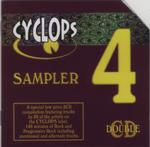

| Artist: | Various Artists |
| Title: | Cyclops Sampler 4 |
| Label: | Cyclops CYCL 090 |
| Length(s): | 73+73 minutes |
| Year(s) of release: | 2000 |
| Month of review: | [01/2001] |
| 1) | Rob Andrews - Sunlight On Leaves | 4.48 |
| 2) | Citizen Cain - Liquid Kings | 11.23 |
| 3) | Finneus Gauge - Press The Flesh | 7.40 |
| 4) | Flamborough Head - Schoolyard Fantasy | 8.05 |
| 5) | Fruitcake - On The Edge | 5.22 |
| 6) | Haze - For Whom | 5.20 |
| 7) | Jump - When Silver Calls | 6.04 |
| 8) | Bjorn Lynne - Shapechanger | 6.58 |
| 9) | Guy Manning - Post Mortem | 7.19 |
| 10) | Mostly Autumn - The Night Sky | 10.03 |
Disc 2:
| 1) | Mostly Autumn - Pieces Of Love | 4.15 |
| 2) | Parallel Or 90 Degrees - Encapsulated | 7.30 |
| 3) | Pineapple Thief - Private Paradise | 11.38 |
| 4) | Salem Hill - When | 5.58 |
| 5) | Sinkadus - Positivharalen | 7.15 |
| 7) | Transience - Desert Falls 2 | 8.24 |
| 8) | Twelfth Night - The Ceiling Speaks | 6.28 |
| 9) | Von Daniken - Extract From: Electrick Fish Music | 3.34 |
| 10) | Vulgar Unicorn - More Money Than I Kow What To Do With | 4.55 |
| 11) | Kopecky - Bartholomew's Kite | 8.04 |
Citizen Cain brings us the longest track of the album with Liquid Kings from the rerelease of Serpents In Camouflage. As always strongly Genesis influenced and the sound is a bit flat showing the "age" of the track. Although recognizably from another time the song is quite good with some Marillion influences in the keyboards and instead of boring me with loads of lyrics, Cyrus manages to convey a certain dramatic effect. The song takes a tad long.
Innovators Finneus Gauge are up next. Greatly varied drumming, grand melodic vocal lines by subdued vocalist Laura Martin, long low bass lines and of course those Echolynian backing vocals. The guitars and keyboards also have their role, but never so great as to take the focus of the composition. A perfect marriage of fusion and progressive. Towards the end the song becomes positively dazzling.
Flamborough Head are something else entirely. The opening is very good, with a strong feeling of foreboding. The continuation is rather relaxed like a combination of Pink Floyd, Egdon Heath and Collage. The Hey You with which the vocal part starts, also sounds a bit familiar. Especially the melodic content of the track, with an important role for Spanninga on the very symphonic keyboards. Their is a certain 'Dutch'ness to the vocals.
In comparison Fruitcake is a rather "ordinary" and certainly not of the distinctiveness of some of the tracks on their Room For Surprise. For Whom by Haze is the only track to come from one of the Cyclops Club releases. A rather easy going ballad built on a nice melody. The liveness of the performance is easy to spot. Soundquality is not bad, but not great either. Jump brings us another live track, one which did not make it to The Freedom Train. Quite a nice track this, maybe I am acquiring a taste for these guys. I didn't like the Freedom Train at all, but Matthew was a good album. Singer Jones shows the back of his tongue on this one, and there's quite some atmosphere building in this track.
Shapechanger by Bjorn Lynne is taken from his great Wolves Of The Gods. An album to be recommended. The music lies somewhere between electronic and progressive. This is a spooky piece, that also has its share of electric guitars.
Post Mortem by Guy Manning is one of the more "progressive" elements of the album Tall Stories For Small Children. The first part is VERY Floydian with thoughtful bass playing, long notes and a tapestry of keyboards. Then Manning shows his vocal capabilities in the acoustic follow-up. He has a very warm voice.
The final track on this first disc is by Mostly Autumn. Their The Night Sky is almost an ode to Pink Floyd. And a great piece of music to boot, slowly evolving from Floydian dreary vocals through violin to a grand guitar finale.
Disc 2 opens with Mostly Autumn. From their second disc comes Pieces Of Love. This is sensitive ballad and is followed by the rather harsh Encapsulated by Parallel Or 90 Degrees. Quite a contrast. Pineapple Thief is of the bands present, closest to ordinary music and harbours most influences from todays music. Their long track, comparable to Porcupine Tree in the combination of Britrock and drawn out psychedelic excursions, is an alternate take of the album version.
Salem Hill is here with When, a song that gets slowly underway. A terrific vocal melody and well arranged backing vocals make this one of the finds of this compilation. Note that this song is not from their newest album Not Everybody's Gold, but from the first one on Cyclops: The Robbery Of Murder. Maybe a little more fire in the final part of the track would have lifted it even a bit higher.
The previous two discs of Sinkadus offered us quite a small amount of original music: most tracks were present on three of the discs. Fortunately there is now Cirkus on which Sinkadus returned with some more dark edges, plainly audible in the opening of Positivhalaren. The flute is still present giving the music a more positive outlook. A nicely tense piece in the style of (older) King Crimson, but a bit quieter.
Sphere does not make a strong impression on me with Shrimp SNG. Quite a bit of organ, but the melody kind of leads me nowhere. I was more impressed with their contribution to the previous Cyclops sampler. All a bit repetitive this time. Transience is more or less Lands End and they bring an alternate version of Desert Falls. It is quite a bit shorter than the album version, which I found a bit long. I am afraid it still holds, the final part just does not seem to belong.
Actively Twelfth Night takes reign in The Ceiling Speaks. Not the best of their tracks, but the really good ones are generally mile long.
Von Daniken is from the earliest of the Cyclops releases, number 28. This is a kind of electronic duo as a side project for Haze and World Turtle. I liked their album and this song is a good example with a great uplifting theme.
After Vulgar Unicorn's More Money Than I Know What To Do With (in the style of Pineapple Thief, see earlier), we close with some tense moments in Kopecky's Bartholomew's Kite.